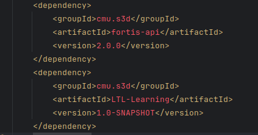

common package. I checked last 30 commits randomly and did not find this folder in ANY of the commits! Its also not in .gitignore 
<2024-09-17 মঙ্গল>
I am trying to change codebase of Fortis - a research paper made by a PhD student in CMU. So I need to run that codebase for that, firstly.
These dependencies are not available in maven repository. So they must be available as jar files online. But I could not find any such jar files! And I checked .gitignore file of the fortis-core repository and it excluded bin folder that includes the jar files. 
Possible reasons:
As you can see in the list of packages, there is no common package. I checked last 30 commits randomly and did not find this folder in ANY of the commits! Its also not in .gitignore
Possible solutions:
The goal is to generate costs and use that to generate graphs. Then we will inspect how effective those generations are.
The input should be:
Controllable states are which that machine can control. And obserables are which that machine can observe. Give a list of states, you will return me the controllableMap and obseravbleMap. Assign a cost between 0-4 to them. Keep sum of cost within total_cost.
Example input:
states: ["eo.enter", "eo.exit", "v.enter", "v.exit", "password", "select", "vote", "back", "back", "confirm"]
description: It is a voting system. In the environment, both EO and voter can enter anytime. The individual gives password, selects a vote and confirms. He can go back anytime. It is crucial that the person who entered the password is the person who confirms the vote.
total_cost: 30
Example output:
"controllableMap": {
"1": [
"back",
"confirm",
"password",
"select",
"vote"
],
"3": [
"eo.enter",
"eo.exit",
"v.enter",
"v.exit"
]
},
"observableMap": {
"0": [
"back",
"confirm",
"password",
"select",
"vote"
],
"2": [
"eo.enter",
"eo.exit",
"v.enter",
"v.exit"
]
}
Now let us consutrct a dataset.